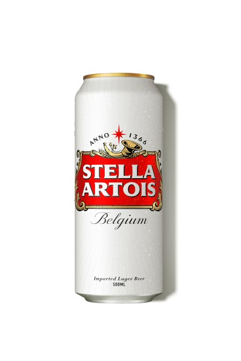

월드 와이드 웹(World Wide Web, WWW, W3)은 인터넷에 연결된 컴퓨터를 통해 사람들이 정보를 공유할 수 있는 전 세계적인 정보 공간을 말한다. 간단히 웹(the Web)이라 부르는 경우가 많다. 이 용어는 인터넷과 동의어로 쓰이는 경우가 많으나 엄격히 말해 서로 다른 개념이다. 웹은 전자 메일과 같이 인터넷 상에서 동작하는 하나의 서비스일 뿐이다. 그러나 1993년 이래로 웹은 인터넷 구조의 절대적 위치를 차지하고 있다. 인터넷에서 HTTP 프로토콜, 하이퍼텍스트, HTML형식 등을 사용하여 그림과 문자를 교환하는 전송방식을 말하기도 한다.
인터넷과 웹은 다르다 인터넷이 운영체제라면 웹은 프로그램. 서비스의 하나일뿐. 핵 공격 방어를 위해 인터넷이 생기게 되었다. 서로서로가 수신하고 통신가능하다. 인터넷은 90년대까지는 기업, 군대 같은 특정 집단만 알고있는 것이었다. "웹" 은 스위스에서 등장했다. 스위스의 유럽입자물리국이 있는데 이곳에 팀 버너스 리 가 취직하게 된다. 이곳에서 Enquire 라는 웹 이전의 프로그램을 만들기도 했다. 그가 만든 결과물에 인터넷을 결합시켰는데 그것이 World Wide Web 이다.
Web Browser 와 Web Server
github 사이트에서 GITHUB 를 타면 다른 사람들이 내 페이지를 볼 수 있음